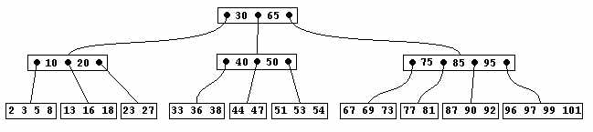

Home | PSI RAS | RCIS | S-Tree Lib

|
Home | PSI RAS | RCIS | S-Tree Lib
|
In the theory of data structures the problem of index representation is known as the problem of maintaining dynamic dictionaries. A dynamic dictionary is a data structure for storing dictionary elements, called keys, together with algorithms of search, insertion, and deletion of the keys. Balanced trees are intended to provide for an efficient solution of the problem.  Fig.1. Balanced tree with numerical keys. A balanced tree stores keys chosen from a finite set of keys K. The key set K is linearly ordered, and the keys are placed to the tree according to the ordering (see Fig.1). Each node of the tree contains a number of keys. Leaves don’t contain anything else, while the internal nodes additionally contain references to other nodes. A number of references in an internal node equals the number of keys in the node plus 1. An internal node S composed of m keys is denoted by S = (S0,k0,...,Si,ki,Si+1,...,km-1,Sm) The following property of the nodes of the tree is the bases for an efficient tree searching.
A balanced tree is organized such that Trees satisfying the above properties 1 and 2 are called structured trees. A search algorithm is common for all structured trees. Starting from the root one should look for the given key k in a current node, and either find the key in the node or find a pair of adjacent keys ki-1, and ki such that ki-1 < k < ki, and continue searching in the sub-tree referenced by Si.
|
|
Konstantin Shvachko: |